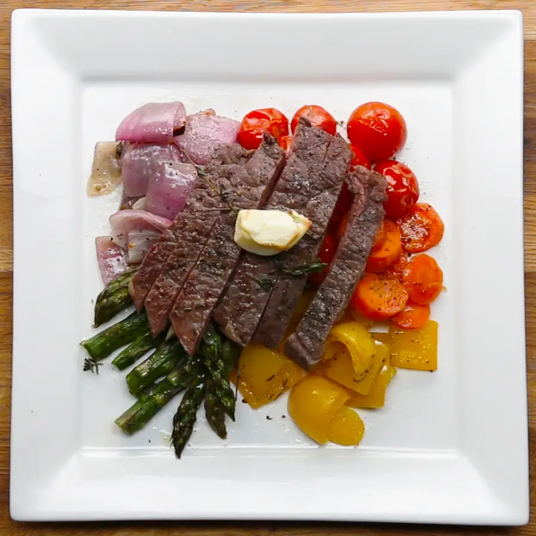
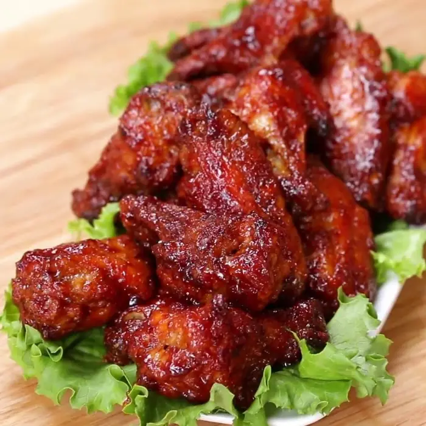

Eatery
An eatery
This is a place where food and beverages are served to customers,
often in a casual or informal setting. Eateries include :
- cafes,
- diners,
- and food stalls
providing a range of dishes from snacks to full meals.
Unlike formal restaurants, eateries often emphasize quick service
and may have limited seating or takeout options,
making them popular for convenient and affordable dining.
The atmosphere is usually relaxed, catering to a wide range of patrons.
Caleb favorite foods
- Owo and Starch
- Banga soap and Starch
- Rice and Stew
- Owo
- palm oil
- cray fish
- meat
- flour
- And starch
about
contact